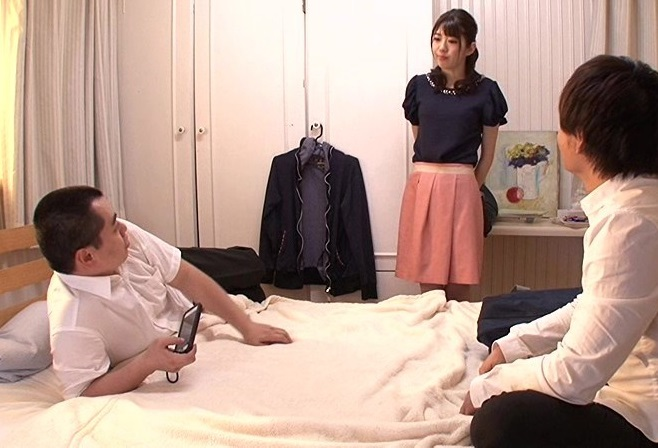

Ôi Vy ơi, em đã thay đổi đến nhường nào vậy? Ngoại tình, Some, Public, nói tục, ăn mặc không khác gì Hot Wife, mang tính cách của một Mistress, tâm lý thì hoàn toàn thuộc thế giới Femdom… còn điều gì mà tôi chưa phát hiện ra ở em không? Có phải vợ tôi bây giờ là một Nữ thần Porn bước ra từ những thước phim SEX mà tôi đã xem không? Mặc lại quần áo, đáng lý ở nhà thì không cần phải mặc quần lót nữa, ấy mà tôi vẫn cứ mặc vào, vì cảm giác cứ sương sướng, cảm giác như cái quần lót đang bó chym, bó cái nhục dục của tôi lại, tiếp tục ém sâu vào người để tôi có đủ tinh thần chờ đợi Vy đến tối vậy. Tôi làm gì bây giờ đây? Con người Vy bây giờ khiến tôi vừa kích thích tột đỉnh, vừa tò mò đến giận người. Em đạt đến hạng Dâm Nữ thế này bao lâu rồi? Và những sự việc nào đưa đẩy em lên đến một đẳng cấp như thế?
“Vy ơi mau về với anh, anh muốn biết…”
Lời nói đầu: được viết từ mọi nguồn cảm hứng về Some, Cuckold, NTR…!
~Truyện viết rất đời không giống như các mô-tuýp vào đề nhanh, yếu tố kích dục là có, nhưng sẽ tăng dần về sau, mong đọc giả hãy kiên nhẫn các chương đầu tiên để hiểu mạch truyện và cảm xúc nhân vật tường tận. Có một số câu thoại lặp từ khá nhiều, nhưng để giữ cho tính thực tế được nêu cao mọi người cứ thử đọc thành tiếng sẽ thấy thoải mái ngay. Hy vọng đây sẽ là món ăn tinh thần tuyệt vời cho các đồng dâm cùng tư tưởng, hãy là chính mình ngay tại topic này. Cảm ơn mọi người.

p/s: Đây hoàn toàn là không có thật, cũng như mọi cảm xúc hoàn cảnh đều là phóng tác ra từ sách báo, phim ảnh, truyện đời thường chứ không phải từ chính ai, hay bản thân em, xin mọi người lưu ý ạ!
Chương 1: “Anh có vấn đề gì không?”
*Buổi sáng: Ngày 9/8/2019 – 7:15 AM
-Anh Quân, dậy đi mấy giờ rồi? Ngày nào cũng phải gọi như gọi đò thế này em mất kiên nhẫn rồi đấy. – Vy lay tôi dậy khi đã chuẩn bị xong.
-Ùmm, anh xin lỗi do thiếu ngủ quá.
-Suốt ngày game game, đã đi làm mệt mỏi rồi thì tối lo nghỉ sớm đi, quá chán nản, khéo lại trễ làm nữa thì…
-Vy lại tiếp – Liệu có ngày, bảnh mắt dậy không thấy vợ đâu rồi tá hỏa nhé. Em muốn bắt Grab đi làm!
-Thôi em, đợi anh 10 phút, hôm nay thứ 3 chắc không tắt đường như hôm qua đâu mà, xin lỗi vợ!…
Lại tiếp tục một ngày như bao ngày, hôn nhân của tôi đã “tồn tại” được 5 năm, chưa kể đến tháng ngày quen nhau ròng rã từ 3 năm trước nữa. Mọi thứ vốn dĩ đã định hình từ những năm thứ 2, thứ 3, khi tất cả dần đi vào sự ổn định thì cảm xúc cũng theo đó mà vơi đi. Chẳng ai có thể giữ được ngọn lửa tình yêu cháy ngùn ngụt sau chừng ấy năm sống cùng, âu là giữ nó âm ỉ, le lói trong khoảng không trách nhiệm đang gánh gồng mà thôi. Nào cơm, nào áo, nạo gạo, nào tiền tài vật chất, tập trung vào những thứ đấy thôi cũng đủ làm cảm xúc trong tình yêu trở nên ngày càng vụng về.
Nhớ lại lúc trước, cái khi còn đôi mươi , nhà tôi, nhà em, đưa đi đón về, hẹn nhau tay bắt mặt mừng, lòng rung động, tim thổn thức, những đoạn chat còn lưu, hình ảnh vui cười hãy còn, nét hồng ở đó-trên má, sự vô tư vẫn lưu trên mí mắt, sức trẻ vươn dài đến tương lai,… ấy mà bây giờ đang ở ngay tương lai rồi thì mới thấu “cảnh trời xanh”.
Vy và tôi đều là nhân viên công sở, em làm tài chính, còn tôi làm bất động sản. Văn vẻ cho nó sang mồm chứ chẳng qua trong giới cũng chỉ là thằng cò đất, tay ngang, dòng đời đưa đẩy quen được vài người bạn, biết được vài thông tin, bay cho người ta được mấy lô đất , thế là leo lên làm trưởng phòng. Họa chăng có tí tài múa mép nên nó mới giữ cho ở cái vị trí này, chứ ai cũng thừa biết một công ty quèn, sức mấy lại muốn nuôi một thằng nhân viên nào lâu năm, để trả tiền thâm niên cho hắn làm gì. Âu tất cả cũng do may mắn… Còn Vy, em thì trái lại, một người phụ nữ thông minh, có sắc, lại rất quyết đoán trong công việc. Hiện em là thư ký cho giám đốc kinh doanh của một công ty tài chính lớn, công việc em rất bận rộn, đa phần là tiếp khách và thường xuyên về muộn hơn tôi. Tuy là bận bịu như thế nhưng em vẫn giữ cho mình một vóc dáng rất tươi trẻ kèm một gương mặt thương hiệu. Mắt e to và sâu, đôi mày đều tựa như vẽ, mũi cao tự nhiên, môi tều đi kèm có một chiếc cằm v-line chẳng thể nào chê được, về thân hình k có gì phải bàn cãi với một cô thư ký: Ngực em rất to, thân đồng hồ cát, mông nở tròn căng phía sau và một đôi chân rất thuận với bộ mông ấy; em không cao chỉ dừng ở 1m59, người ta hay đùa em “ráng thêm 1cm nữa là chạm đến đẳng cấp chân dài rồi”, nhưng em lại vô cùng tự tin về đôi chân của mình, phải nói da rất sáng, không có một tý lông nào, mịn như em bé vì em luôn giữ thói quen skin-care của mình, nào wax, nào kem thoa đều mỗi tối. Ôi thôi, càng tả về em tôi càng cảm thấy mình may mắn, em chấp nhận yêu tôi lúc ấy có lẽ là do sự non dại của tuổi trẻ, hoặc vì tôi là thằng dẽo mồm thực sự. Cuộc tình của tôi như là sự minh chứng cho việc: trai yêu bằng mắt-gái yêu bằng tai vậy; ngoài cái lưỡi nói những lời lươn lẹo ra chắc tôi không có gì khác; Tiền không, nhà không, của cải không, vinh hoa không, phú quý không, bệ thế gia đình cũng chỉ hạng thường có được 2 căn nhà, 1 cho bố mẹ, 1 cho em và tôi đang sống. Kinh tế hai vợ chồng hiện tại luôn trong mức vừa đủ ăn hoặc có tháng thì eo hẹp, phải tằn tiện cắt giảm lúc thứ này, lúc thứ nọ, đỉnh điểm bằng việc chiếc ShMode của Vy đã phải cho lên đường vì tháng đó mẹ ốm mà không có tiền tiết kiệm nhiều để lo. Cứ thế, khiến cho đầu óc chẳng lúc nào thấy bình an mà luôn trong tình trạng đắn đo suy nghĩ, hôn nhân mới hóa nặng nề thế này.
“Tình yêu” đang trên đà đi xuống thì tình dục cũng trượt dốc đi theo, từ một ngày không dưới 2 lần đến nay “mạnh lắm” chắc cũng được 2 lần một tuần?! Vy rất nặng nhu cầu về tình dục, em yêu hình thể mình và luôn cần người nâng niu nó, em luôn biết cách tự thỏa mãn mình khi không có tôi, cũng chẳng có vấn đề gì khi tôi bắt gặp, nhìn thấy tận mắt-em hoàn toàn tự tin giữ vững bản năng của mình. Dạo gần đây, cũng tại đuối sức trong hôn nhân, tôi dần bị áp lực tâm lý khi không thể phát huy đúng vai trò trụ cột trong gia đình, nên có lẽ làm với tôi em không còn thăng hoa nữa và tôi cũng vậy, cảm thấy không xứng khi lên giường với em. Tôi xấu hổ, khi về lâu dài thì bị em phát hiện chỉ là một thằng giỏi nói còn làm thì không. Hàng đêm, tôi hay ngủ muộn hơn em, dùi đầu vào máy tính chơi game hoặc xem Sex. Không biết từ bao giờ, tôi có cảm giác ngại làm tình với em, cảm thấy mình như một ông chồng Sissy, một thằng đàn ông yếu thế, trên răng dưới dái; tôi biết em cũng cảm thấy điều đó nên chuyện mỗi đêm không có tôi trên giường khi em vào ngủ cũng là việc bình thường. Em cũng biết tôi xem Sex nhưng em cũng chẳng đá động đến hay hỏi han gì, em đánh lờ đi bằng việc hay nói tôi chơi game mà thôi. Có lẽ từ lâu, em cũng đã mất dần niềm tin vào năng lực của tôi và sinh ra cảm giác “khinh” ở một mức độ nào đó rồi…Em không nói thẳng ra nhưng thái độ em toát lên được điều ấy!
*Buổi sáng: Cùng ngày – 7:56 AM
-Còn có 4 phút, từ đây bấm thang máy lên chắc cũng trễ mất rồi, ăn uống được cái nổi gì nữa, anh thấy chưa?
-Xin lỗi vợ, anh cố lượn lắm rồi…
-Ngủ , ngủ cho lắm vào, ngấy cái cảnh này tận họng rồi, thôi đi đi.
-Ok vợ, anh đi nhé, vợ làm vui vẻ, yêu e..m…..
-……
Chưa dứt lời thì Vy đã quay mặt vào tòa nhà, em đi vội. Nhìn em từ phía sau, chăm chú vào bờ mông căng đang bước lên bậc thang, lấp ló quần lót phía dưới chiếc váy mịn màng , mà dương vật tôi cương lên. Hôm nay, em diện áo 2 dây hồng cổ sâu, đeo một cái vòng Choker trông rất gợi tình, kèm với bralette màu đen hờ hững-nhẹ nhàng, chiếc váy đen ngắn qua mông một chút, đi với quần lót ren chung bộ, em mang đôi cao gót màu kem quyến rũ. Ôi, Vy chẳng khác gì khi còn thanh xuân cả. Giật mình, tôi đề máy lao đi; và thế là sáng nào cũng vậy, tôi thức dậy, loay hoay với tất cả những dòng suy nghĩ trên lặp đi lặp lại đều đặn, cho đến khi đặt chân đến cửa phòng làm việc của mình thì mới thôi không nghĩ về em, về tôi nữa.
*Buổi trưa: Cùng ngày – 11:58 AM
~Ting!!! – Tiếng mess vang lên.
-Em chuẩn bị đi ăn với anh Minh và cả phòng kinh doanh, hôm nay ăn ở The Garden.(Minh là giám đốc kinh doanh công ty, sếp trực tiếp của Vy)
-What? Tự dưng sang thế, nhậu nhẹt gì nữa à?
-Ừ, sắp đặt mục tiêu mới, anh Minh muốn mời cả phòng ăn trưa để lấy tinh thần cho mọi người.
-Lại đi xe Minh sao?
-Em định đi với chị Khanh mà anh Minh bảo có việc muốn bàn trên đường nên em đành chịu.
-Lúc nào cũng “đành chịu”, nhiều lý do để “đành chịu” quá nhỉ? Việc gì quan trọng thế, đến nơi nói không được à?
-Em không biết.
-Có bao giờ thấy em đi với ai khác đâu mà nói chị Khanh ra làm gì cho dày chuyện!
-Em cũng muốn đi với anh Minh, trời nắng lắm! Anh có vấn đề gì không?
-…
-Thôi nhé, em đi đây!.
Em cứ thế để lại tôi chưng hững với dòng cảm xúc. Tôi ghen lắm, giữa tôi và minh không cần nói cũng thấy sự khác biệt. Anh ta quá đĩnh đạc, từ dung mạo đến tính cách, phải nói rất điềm đạm và thành công. Tuy chỉ là một giám đốc đánh thuê, nhưng theo nhận xét của Vy thì không phải chỉ công ty này muốn anh ta về làm mà khá nhiều nơi giành giật để được Minh làm việc cùng. Minh du học từ Mỹ về, bệ thế gia đình đồ sộ, quan hệ rộng, quan trọng hơn cả: Minh rất cầu tiến, biết nắm bắt cơ hội cho chính bản thân mình, nên được đà thành công lại thành công hơn nữa. Phải nói số phận an bài cho 2 kiếp đàn ông này. Nghĩ đến chỉ thấy tủi thân, nhục chí; tôi quả thật là một “Sissy Husband”. Trưa đó, chả còn thiết ăn uống gì, tôi tiếp tục làm việc. Cố gắng quên đi thời gian, không nghĩ đến Vy nữa.
*Buổi tối: Cùng ngày – 6:00 PM
Tôi xong việc rồi, đáng lẽ nên nhắn hỏi Vy xem như nào để qua đón.. nhưng thôi tôi nghĩ chắc lại trả lời:”Em vẫn đang sắp xếp lịch ngày mai cho anh Minh đây, sắp xong rồi, anh về trước đi đừng đợi em.” Tôi cũng chỉ dám mong được đèo Vy đi làm mỗi sáng, chứ không dám mong được đón về, vì em trăm công nghìn việc, chả biết khi nào mà lần. Một tháng đổ lại đây, tôi chẳng lúc nào được chở em về cả, hôm thì là Minh, hôm thì chị Khanh, hôm thì Grab. Đối với Vy việc tự do đi lại là hàng đầu, em mất đi chiếc xe của mình rồi nên cảm thấy rất khó chịu việc tôi đưa đón, em không giống như những cô vợ khác mong được chồng đưa rước, vì em cảm thấy như thế là phiền, là bị quản lý, là không có đôi chân của riêng mình. Trước đây cũng vậy, mới quen thì đưa em vài lần em đã nói luôn là khi nào đi chơi thì hãy làm vậy, còn khi đi học, đi làm em muốn tự bản thân mình đi lại cho tiện cá nhân và cảm thấy tự do. Vậy nên tôi mở Facebook xem bảng tin cho thoải mái, đằng nào tôi cũng sẽ về nhà trước; lướt được vài đường thì thấy:
[IMG]
Caption:
Em cười vì anh vẫn ở đó, đợi em nhé…
Hết Chương 1!!!